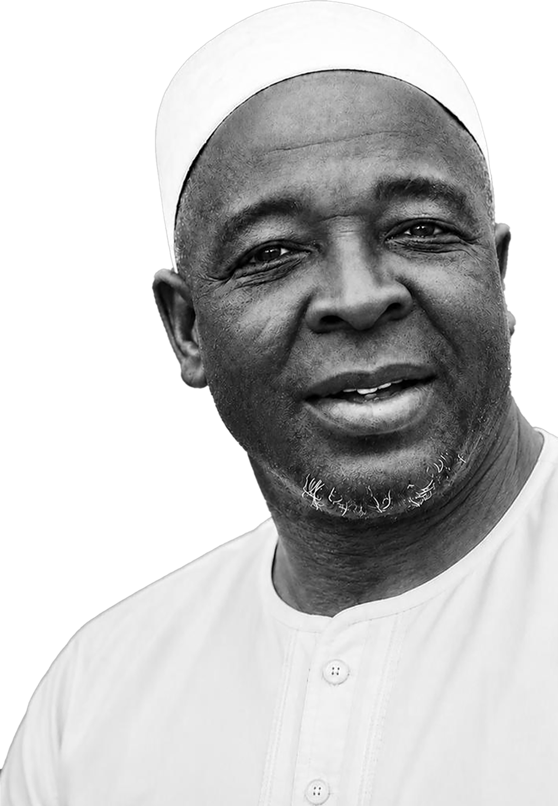
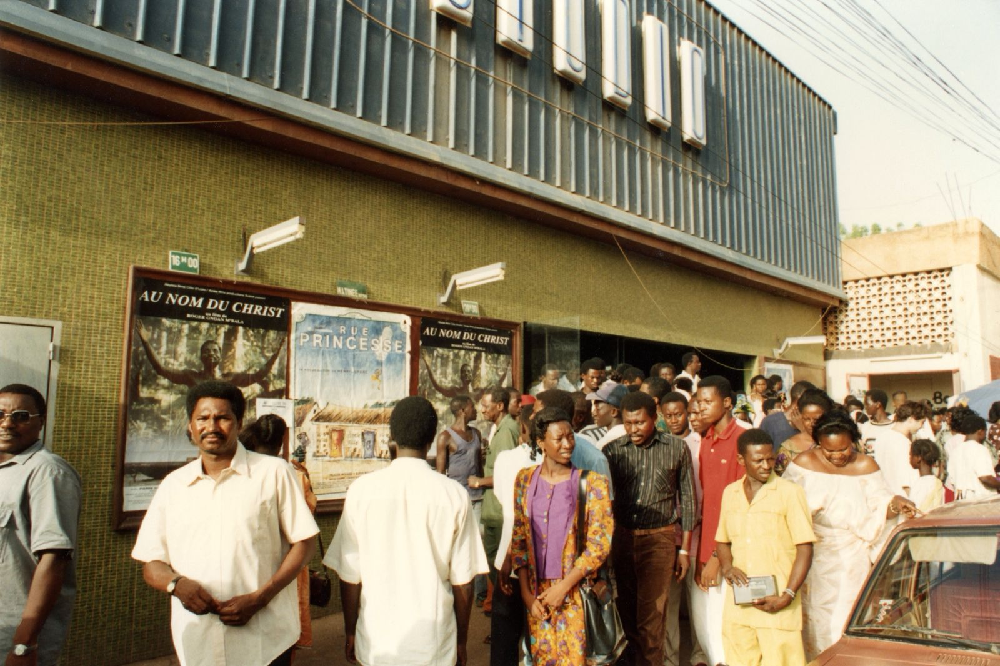
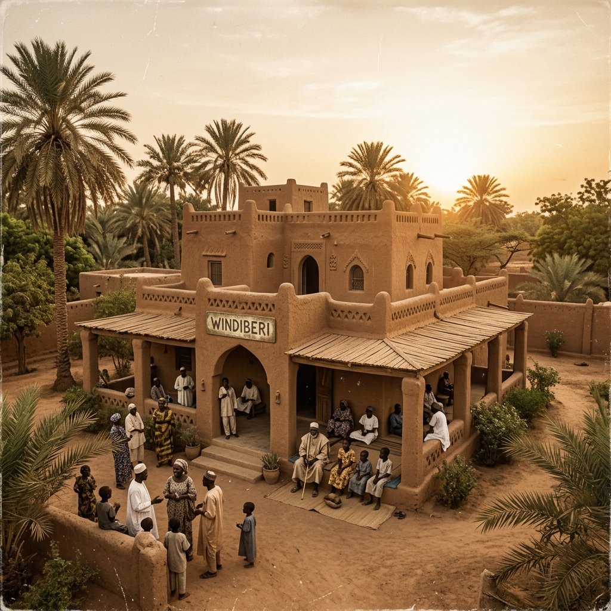

Moussa Gros
Bâtisseur, visionnaire, homme de paix
Né en 1910 à Tourikoukèye, Elhadj Moussa Gros Ibrahim fut l'un des pionniers de la modernisation économique de Niamey, un artisan de la cohésion sociale et un patriote engagé. Ce site lui est dédié, pour transmettre son histoire et ses valeurs aux générations présentes et futures.

Elhadj Moussa Gros Ibrahim
1910 — 1973
« La vie d'un homme ne se mesure pas seulement à ce qu'il a accompli, mais à ce qu'il a inspiré. Moussa Gros a inspiré une ville, une génération, une Nation. »
— Message de la Famille MOUSSA GROS
L'œuvre d'une vie
Biographie
De Tourikoukèye à Niamey, le récit harmonisé d'un autodidacte de génie.
Lire le récit →Œuvres & Réalisations
Hôtel Ténéré, SONEXCI, galeries marchandes et transports Berliet.
Découvrir →Valeurs & Héritage
La véranda de Windiberi, la fraternité africaine et la transmission du windeeri.
Explorer →Rue Moussa Gros
L'inauguration solennelle de juin 2026 et les remerciements aux autorités de Niamey.
Voir l'hommage →« Que la grâce d'Allah enveloppe son âme et que sa mémoire continue d'inspirer les générations à venir. »
Biographie de Moussa Gros
La vie exemplaire d'un autodidacte de génie, pionnier du Niger moderne.
Elhadj Moussa Gros Ibrahim, né en 1910 à Tourikoukèye dans le département de Téra, est une figure emblématique de l'histoire économique et sociale du Niger. Autodidacte, travailleur infatigable, visionnaire et profondément attaché aux valeurs songhay, il a marqué son époque par son intelligence des affaires, son patriotisme et sa capacité à rassembler.
Origines et jeunesse
Issu de la communauté Songhay, il grandit dans un environnement où la dignité, l'honneur, la solidarité et le respect de la parole donnée étaient des valeurs cardinales. Sous la protection de ses deux grands frères, le vétérinaire Alzouma et Daouda Hareyban, il apprit très tôt la responsabilité et la rigueur du travail.
Autodidacte, il se lança dans la vie avec une détermination remarquable, sans bénéficier d'une formation académique formelle.
Premiers métiers et ascension
Son premier métier fut celui de chauffeur de gros porteurs. Il sillonna le Niger et la sous-région, parcourant les villages les plus reculés, transportant des marchandises et découvrant les réalités du terrain.
De ce métier, il fit un tremplin : il devint propriétaire d'un parc de camions Berliet et fut l'un des membres fondateurs — puis premier président — du Syndicat des Transporteurs du Niger.
Vision pour Niamey
Elhadj Moussa Gros Ibrahim rêvait d'une capitale moderne, dynamique et ouverte sur le monde. Il initia plusieurs projets structurants :
- L'Hôtel Ténéré, devenu un établissement de référence internationale.
- La SONEXCI, premier complexe cinématographique de Niamey, avec les salles Sonni Ali Ber et Zabarkan, en collaboration avec son ami El hadj Moukaila Sakoira.
- Une galerie marchande moderne accueillant SINGER, BOTSCH et des opérateurs nigériens de premier plan.
Engagement patriotique
Son patriotisme était concret et profond. Il participa activement à la construction économique et financière du Niger souverain :
- Actionnaire de la Banque de Développement de la République du Niger_BDRN, devenue aujourd'hui SONIBANK,
- Actionnaire de la Société Nigérienne d'Arachide_SONARA, et grand artisan de la traite arachidière
- Soutien moral, matériel et financier actif des leaders indépendantistes.
Patriote, convaincu, il permit que son seul garçon embrasse la carrière militaire pour être aujourd'hui le Général de Division MOUSSA GROS et sa cadette d'être élue dans une législature au Niger en tant que Député Nationale.
Fin de vie et héritage
Il rendit l'âme le 27 mai 1973 à Windiberi, sa concession familiale emblématique située en face du Grand Marché de Niamey.
Sa disparition fut un deuil immense pour la capitale et la Nation, mais son héritage demeure vivant dans les valeurs de la concession Windiberi et les infrastructures qui structurent encore Niamey.
Œuvres majeures et contributions
La trace matérielle et l'esprit d'entreprise d'un pionnier de la modernisation de Niamey.
Visionnaire et entreprenant, Elhadj Moussa Gros Ibrahim a initié et financé des projets d'envergure qui ont profondément façonné le paysage économique et socio-culturel de Niamey et du Niger.
L'Hôtel Ténéré
Elhadj Moussa Gros Ibrahim fut l'initiateur et l'investisseur à l'origine de la construction de cet hôtel historique, conçu pour doter Niamey d'une infrastructure d'accueil moderne et de prestige, ouverte aux voyageurs d'affaires internationaux. La rue qui porte aujourd'hui son nom borde directement cet hôtel, réunissant symboliquement l'homme et son œuvre.

SONEXCI — Cinémas Sonni Ali Ber & Zabarkan
En partenariat avec son ami Elhadj Mounkaila Sakoira, il fonda la SONEXCI, dotant ainsi la capitale de ses deux premières grandes salles de cinéma modernes. Le choix des noms Sonni Ali Ber et Zabarkan témoigne de sa conscience identitaire et de sa fierté panafricaine.
La Galerie Marchande
Précurseur de l'immobilier d'affaires, il conçut au cœur de Niamey un ensemble de galeries modernes. Cet espace hébergea les premières boutiques de firmes internationales comme SINGER et BOTSCH, ainsi que des commerçants nigériens de premier plan.
Transport & Commerce
Véritable pivot logistique de la sous-région, il monta un important parc de camions Berliet. Il organisa le commerce général, la friperie et la collecte d'arachide. Ses réseaux d'affaires s'étendaient de Niamey à Bamako et d'Abidjan à Kano et Lagos.
Le Patriotisme Économique
Au lendemain de l'indépendance du Niger en 1960, Elhadj Moussa Gros Ibrahim a mis ses ressources au service du nouvel État en tant qu'actionnaire fondateur de la BDRN, outil de financement primordial.
Il fut également un actionnaire de la SONARA, au cœur de la filière arachidière nationale. Sa contribution a été décisive pour asseoir la structuration de l'économie souveraine nigérienne.
PRISES DE PARTICIPATION AUX ENTREPRISES NATIONALES
BDRN
Banque de Développement du Niger
SONARA
Commercialisation de l'Arachide
Les valeurs d'un homme, l'héritage d'une vie
La grandeur d'âme, la cohésion sociale et la transmission du windeeri.

Windiberi — La maison de tous
Windiberi, la concession historique en face du Grand Marché, était un creuset de valeurs africaines. Sous l'égide d'Elhadj Elhadj Moussa Gros Ibrahim, elle s'est érigée en symbole de solidarité, d'ouverture et de générosité. On y accueillait inconditionnellement les voyageurs, les caravaniers, les enfants des autres contrées dans une ambiance fraternelle.
Le foyer de la cohésion sociale
Sagesse et paix
La véranda de Windiberi était un haut lieu de dialogue, de réconciliation et de médiation sociale. Notabilités, commerçants et hauts cadres de tous bords s'y retrouvaient. Loin de la politique partisane, Elhadj Moussa Gros Ibrahim y cultivait la paix, l'unité et la cohésion nationale.
Fraternité africaine
Ses réseaux s'étendaient bien au-delà des frontières du Niger : marchands de cola de Côte d'Ivoire, commerçants du Nigéria, caravaniers touaregs. Il incarnait dans son quotidien un panafricanisme économique et culturel vivant.
Transmission
Il a légué à ses descendants les valeurs cardinales du windeeri — l'esprit de la Grande Famille Moussa Gros. Cet héritage moral reste une boussole pour la famille, soucieuse de le transmettre aux générations futures.
La Rue Moussa Gros
La reconnaissance solennelle de la Ville de Niamey envers l'un de ses grands bâtisseurs.
Un hommage éternel
La commission chargée de baptiser les boulevards, les avenues, les rues et les places de la ville de Niamey créée par arrêté n°17/MJC/A/S/SG/DGCA du 25 janvier 2024. Composée du Ministère en charge de la culture, de celui en charge de l'urbanisme, de la Ville de Niamey, de l'Institut National de la Statistique (INS) et de l'Institut de Recherches en Sciences Humaines (IRSH), en collaboration avec des universitaires concernés. C'est elle qui a retenu le nom de MOUSSA GROS pour cette reconnaissance et le choix de la rue au titre de l'hommage à l'homme et à sa contribution. Le 23 Août 2026, a consacré cette dignité et le baptême de la Rue désormais MOUSSA GROS, le Bâtisseur.

La Famille Moussa gros exprime sa profonde et sincère gratitude :
- Aux autorités du Niger pour le devoir de mémoire qu'elles ont initié et réalisé au nom de la souveraineté et du patriotisme
- Aux autorités de la Ville de Niamey pour toutes les facilitations relatives à la cérémonie du Baptême
- A tous les nigériens pour leurs valeurs humaines et sociales.
Portée symbolique
Le baptême de cette rue est un rappel permanent destiné aux citoyens et à la jeunesse de Niamey. Il témoigne que la Nation sait honorer avec reconnaissance ceux qui l'ont servie avec courage, vision et intégrité patriotique.
Le lien avec l'Hôtel Ténéré
La rue est mitoyenne et attenante à l'emblématique Hôtel Ténéré. Par cette configuration géographique, l'histoire réunit symboliquement le bâtisseur et son œuvre la plus emblématique au cœur de la cité.
Archives, documents et témoignages
La mémoire documentée d'une vie d'engagement au service de la communauté.
Témoignages & Hommages
Ce que la famille, les amis et les collaborateurs retiennent de l'homme.
Laisser un hommage
Partagez votre souvenir ou transmettez un message de paix.
Famille Moussa Gros — Gardienne de la mémoire
La transmission d'un patrimoine moral commun aux générations futures.
Un engagement familial et moral
La Famille Moussa Gros est fière de porter l'héritage intellectuel, moral et spirituel d'Elhadj Moussa Gros Ibrahim. En tant que gardienne fidèle de sa mémoire, elle s'engage à documenter son parcours et à en diffuser les enseignements.
Cet espace se veut dynamique, ouvert à tous ceux qui souhaitent contribuer à faire vivre l'histoire de ce bâtisseur. Notre devoir est de transmettre aux nouvelles générations ses valeurs de solidarité, d'ouverture, d'amour du pays et d'intégrité dans le travail.
Formulaire de contact
Pour toute information, contribution ou demande de renseignements.
Email officiel
imanagence@gmail.comWindiberi Concession
En face du Grand Marché, Niamey, République du Niger